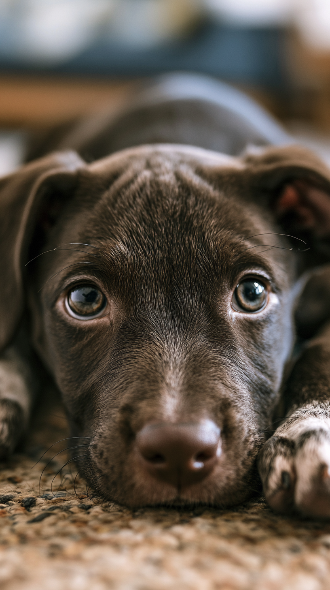
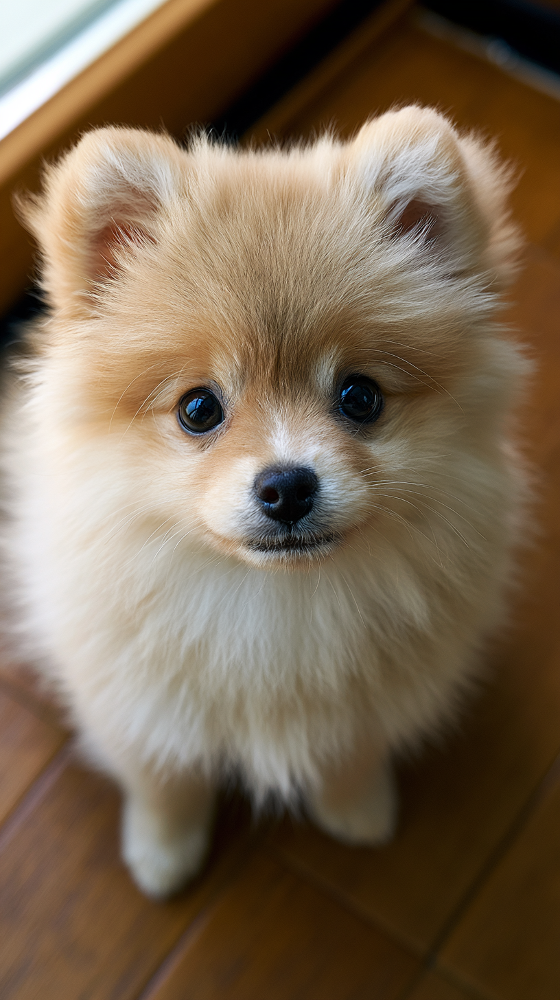
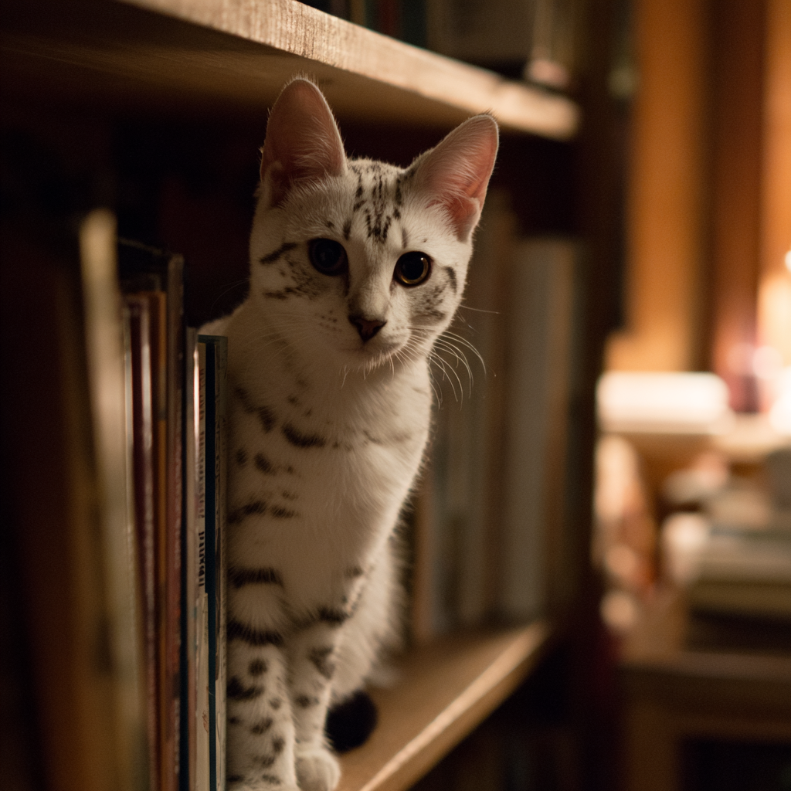

1기록하기
오늘 이 아이의 하루를,
한 장면도 놓치지 않게.
밥 먹는 모습, 첫 산책, 나를 반기던 그 눈빛까지.
사진과 영상을 날짜별로 남기면
petpy가 우리 아이만의 타임라인을 만들어 줍니다.
매일의 작은 순간을 기록하면,
그 기록이 영원히 사라지지 않는 기억이 됩니다.
밥 먹는 모습, 첫 산책, 나를 반기던 그 눈빛까지.
사진과 영상을 날짜별로 남기면
petpy가 우리 아이만의 타임라인을 만들어 줍니다.



언젠가 이별의 순간이 와도, 기록은 사라지지 않습니다.
늘 함께였던 그 자리에 휴대폰을 비추면, AR로 다시 만날 수 있어요.
동네 인증을 마친 진짜 이웃들과만 연결됩니다. 산책 메이트를 찾고, 정보를 나누고, 같은 마음을 가진 사람들과 가까워지세요.
petpy가 세상에 나오면, 가장 먼저 알려드릴게요.
이메일 하나만 남겨주세요.